A group of passionate kids who want to catalyse change in our Communities through better accessing, broadcasting and contributing to the NGOs of our nation.
We envision a Uganda where every community has access to nutritious food, sustainable agricultural knowledge, and collaborative support through empowered grassroots organizations. Through unity and shared purpose, we aim to build a future where no one is left behind.
Explore the areas we focus on to support communities
Providing communities with the knowledge to make healthy food choices.
Teaching sustainable farming techniques to improve yield and income.
Partnering with organizations to maximize community impact.
Equipping the next generation with tools and training for leadership and innovation.
Community Bridges started as a school project by visionary secondary students in Uganda. Inspired by the need to address food waste and hunger, the idea evolved into a digital bridge—linking communities, donors, and NGOs. Over time, we realized the lack of visibility and support most NGOs face and responded by expanding our vision. What started as a tool to route food to the hungry is now a national platform for collaboration and impact.
Community Bridges helps broadcast the activities and success stories of NGOs, showcasing their contributions and promoting awareness of their role in society. Through features like geolocation mapping, users can easily discover foodbanks, aid organizations, and support services in their area. We also provide progress tracking tools that enable NGOs to monitor their work, share their impact with donors, and strengthen their ability to secure funding.
These statistics highlight the urgency and importance of our mission in Uganda.
of Uganda's population experiences food insecurity annually (FAO, 2023).
registered NGOs operate in Uganda — but many lack digital visibility.
of all food produced is wasted before reaching the table (UNDP Uganda).
Join us in transforming communities. Whether you're an individual, organization, or donor — there's a role for you.
Contributors:
Contributors: